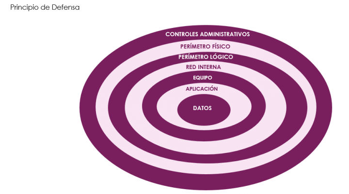

5. Defensa en profundidad en entornos industriales
1. Introducción
El concepto de defensa en profundidad se basa en la premisa de que todo componente de un sistema puede ser vulnerado, y por tanto no se debe delegar la seguridad de un sistema en un único método o componente de protección. De esta forma propone el uso de distintas técnicas que permitan, al menos, duplicar los elementos de protección para limitar los daños en caso de una intrusión en la primera línea de defensa o componente más expuesto. [Wikipedia].
2. Seguridad de la información
La seguridad de la información, tradicionalmente, se ha focalizado en conseguir 3 principales objetivos:
- Confidencialidad de la información.
- Integridad de los datos.
- Disponibilidad.
Tradicionalmente, en entornos informáticos, se ha priorizado la confidencialidad de la información, pues es la propia información lo que tiene valor para la función.
En entornos de automatización industrial e infraestructuras críticas las prioridades son diferentes. En estos entornos, la principal preocupación es mantener la disponibilidad de todos los componentes del sistema en contraposición de la confidencialidad.

Figura 1. Modelo CIA de IEC 62443.
El modelo “CIA1” mostrado en la Figura 1 no es adecuado para una comprensión completa de los requisitos de seguridad de una infraestructura crítica. Para ello, hace falta considerar otros requisitos fundamentales como, por ejemplo, los especificados en la IEC62443:
- Control de acceso: proteger los activos de accesos e información de accesos no autorizados.
- Control de uso: proteger a los activos de operaciones no autorizadas.
- Integridad de la información: proteger los canales de comunicación contra de cambios no autorizados de la información que transportan.
- Confidencialidad de la información: asegurar que la información del espionaje.
- Restringir los flujos de datos: proteger los canales de comunicación para evitar que la información llegue a destinos no autorizados.
- Respuesta a incidentes: asegurar que se responde a incidentes de ciberseguridad de forma correcta. Implica: monitorización, reporting, alertas y la ejecución de acciones correctoras.
- Disponibilidad de recursos: asegurar que todos los recursos del sistema están disponibles y protegerlos de denegaciones de servicio.
Cada vez más, las operaciones de los entornos ICS OT dependen de las tecnologías de la información para el correcto desarrollo de su función. Es, por tanto, necesario implementar controles de ciberseguridad que los proteja, asegure su disponibilidad y su correcto funcionamiento, tanto de las operaciones como de los equipos de la organización.
Contramedidas típicas a utilizar para minimizar amenazas externas son:
- Autenticación de usuarios y equipos.
- Controles de acceso.
- IDS.
- Uso de cifrado.
- Uso de firmas digitales.
- Aislamiento y/o segregación de redes/dispositivos.
- Escáneres de vulnerabilidades.
- Monitorización de la actividad de los equipos y de la red.
- Seguridad física.
Para la mitigación de amenazas internas hace falta una aproximación diferente, dado que un posible atacante tendría la posibilidad de saltarse las contramedidas normales. En este caso, se requiere poner más énfasis en contramedidas como las políticas y procedimientos, separación de roles, monitorización de las actividades, cifrado y auditoría de sistemas.
Por tanto, una tecnología, producto o solución única no es suficiente para proteger adecuadamente los sistemas de control. Se requiere emplear una estrategia multi-capa que incluya dos o más mecanismos de seguridad que se superpongan, es decir, emplear estrategias de defensa en profundidad.
Una estrategia de defensa en profundidad incluye el uso de cortafuegos, creación de DMZ, el uso de soluciones para la detección de intrusiones, políticas de seguridad efectivas, programas de formación, respuesta ante incidentes, mecanismos para garantizar la seguridad física y mecanismos para la monitorización y alerta de incidentes. De esta manera, si una salvaguarda en particular falla, existirán otras en las capas inferiores que mantendrán el riesgo en niveles aceptables.

Figura 2. Estrategia de defensa en profundidad.
3. Defensa en profundidad
1. Políticas y procedimientos de seguridad: Reglas, obligaciones y procedimientos que definan el enfoque de la organización para la protección y seguridad de la información. Las políticas deben comunicarse a toda la organización en una forma apropiada, entendible y accesible.
2. Seguridad física y del entorno: Objetivo: evitar que un posible atacante disponga de acceso físico a los equipos e infraestructuras de red industrial (al Hardware). Las barreras, mecanismos de control de acceso físico y de vigilancia son los pilares para incrementar la seguridad de esta dimensión.
3. Defensa perimetral: El perímetro es el punto o conjunto de puntos de la red interna de confianza, gestionada por la propia organización, entra en contacto con otras redes externas o no fiables, cómo puede ser Internet o redes gestionadas por terceros. El atacante puede tener acceso a los servicios ofrecidos o accesibles desde el exterior y aprovecharse de ellos para realizar una actividad maliciosa. Las medidas en esta capa se centran en el aseguramiento de los accesos remotos a la red.
4. Defensa de red: Si el atacante tiene acceso a la red, puede monitorizar el tráfico que circula por ésta, de forma pasiva (solo lectura) o activa (modificación posible). Para proteger la red de estas amenazas suelen utilizarse sistemas de detección de intrusiones y sistemas de prevención de intrusiones.
5. Defensa de equipos: La seguridad de equipos, tanto servidores como clientes, se basa en la implementación de las siguientes salvaguardas:
- Instalar parches de seguridad para eliminar vulnerabilidades conocidas.
- Desactivar todos los servicios innecesarios para minimizar el factor de exposición del equipo
- Disponer de un anti-malware activo.
- Controlar las comunicaciones entrantes mediante un cortafuegos
- Restringir la ejecución de aplicaciones
6. Defensa de aplicaciones: Las aplicaciones se protegen realizando un control de acceso mediante la sólida implantación de mecanismos de autenticación y autorización.
7. Defensa de datos: Si un atacante ha conseguido traspasar todas las protecciones anteriores y tiene acceso a la aplicación, la autenticación y autorización, así como el cifrado, constituyen las tecnologías más empleadas para proteger los datos.
8. Se recomienda el uso de mecanismos automatizados para realizar copias de seguridad de los sistemas de control que permita disponer de un control de versiones.
9. Se recomienda redundar el almacenamiento de las copias.
Enlaces relacionados con defensa en profundidad
- Cómo logitek implementa la defensa en profundidad
- Cómo Logitek implementa la defensa perimetral.
- Cómo Logitek implementa la defensa de la red interna.
- Defensa en profundidad.
- Cómo Logitek implementa la defensa de los equipos.
- Cómo Logitek implementa la defensa de los datos.
Vídeo 1. Eleven Paths Talks: [9] Defensa en profundidad.
3.1 Anillos concéntricos
Para que un atacante pueda acceder a los datos o la información, antes tiene que vulnerar varios niveles de seguridad, los cuales son más duros a medida que se va profundizando en el sistema.

3.2 Mínimo privilegio posible
El principio del mínimo privilegio (PoLP) hace referencia a un concepto de seguridad de la información en que se da a un usuario los niveles (o permisos) de acceso mínimos necesarios para desempeñar sus funciones laborales.
El principio del mínimo privilegio se extiende más allá del acceso humano. El modelo puede aplicarse a aplicaciones, sistemas o dispositivos conectados que requieren privilegios o permisos para realizar una tarea necesaria.
3.3 Mínimo punto de exposición
Hay que intentar exponer el mínimo de servicios posibles. De esta forma, un atacante tendría menos probabilidades de encontrar una manera de explotar vulnerabilidades y comprometer el sistema. La superficie de ataque puede ser a través de la aplicación, de la red o de los empleados. Tres factores que hay que tener en cuenta a la hora de evaluar esta superficie.
4. Defensa en profundidad aplicado a un entorno empresarial
En el siguiente Enlace, se describe un caso práctico para este contexto.
Obra publicada con Licencia Creative Commons Reconocimiento No comercial Compartir igual 4.0